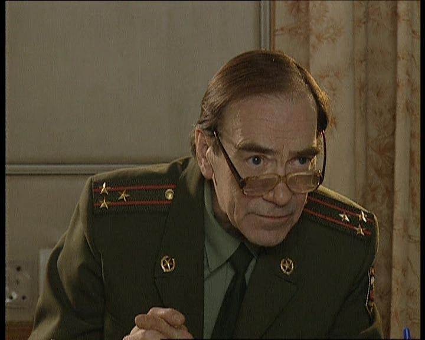
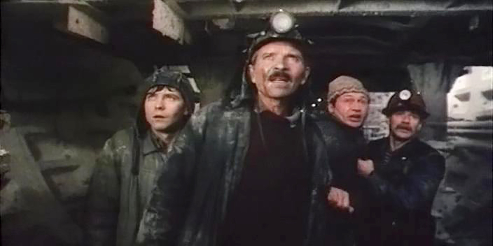

<html>
  <head>
 
    <link rel="icon" href="img/favicon.ico" type="image/x-icon">
 
  </head>
  <body>
  </body>
</html>
<head>
  <title>Старый НТВ-ПЛЮС</title>
</head>
<p style="text-align:center"></p>

<p style="text-align:center">&nbsp;<a class="button1" href="kino-i-video.html" target="_self">КИНО И ВИДЕО</a>&nbsp;<a class="button1" href="novosti.html" target="_self">НОВОСТИ</a> <a class="button1" href="disain-kanalov.html" target="_self">ДИЗАЙН КАНАЛОВ</a>&nbsp;<a class="button1" href="chasi-kanalov.html" target="_self">ЧАСЫ КАНАЛОВ</a>&nbsp;<a class="button1" href="istoria-ntvplus.html" target="_self">ИСТОРИЯ НТВ-ПЛЮС</a>&nbsp;<a class="button1" href="https://www.youtube.com/channel/UC7DDZvYAPBtfeJ1RTLDLD9w" onclick="window.open(this.href, 'Youtube', 'resizable=no,status=no,location=no,toolbar=no,menubar=no,fullscreen=no,scrollbars=no,dependent=no'); return false;">YOUTUBE КАНАЛ</a>&nbsp; &nbsp;</p>

<p style="text-align:center">&nbsp;</p>

<table align="center" border="0" cellpadding="0" cellspacing="0" style="width:830px">
</table>

<table align="center" style="width:830px">
	<tbody>
		<tr>
			<td> ИНФОРМАЦИЯ&nbsp;</td>
		</tr>
		<tr>
			<td><a href="#"></a></td>
		</tr>
		<tr>
			<td colspan="2">
			<p>Леха Николаев - агент национальной безопасности. Ему поручают самые сложные и рискованные дела, он почти всегда работает один, без прикрытия, рассчитывая только на собственные силы и небольшую долю&nbsp;везения.</p>

			<p><a class="button1" <a href="1.html" target="_self">Cмотреть...</a></p>
			</td>
		</tr>
	</tbody>
</table>

<table align="center" style="width:830px">
	<tbody>
		<tr>
			<td><a href="#"></a></td>
		</tr>
		<tr>
			<td colspan="2">
			<p>Фильм основан на реальных событиях и рассказывает о крупной аварии, которая произошла при строительстве очередной станции ленинградского метро весной 1974 года.</p>

			<p><a class="button1" <a href="2.html" target="_self">Cмотреть...</a></p>
			</td>
		</tr>
	</tbody>
</table>
<p align="center"<div class="10px" style="padding:13px 7px 0 7px;">   
       
<a class="main" href="contact-info.html">Контактная информация</a> | 
     <a class="main" href="o-saite.html">О сайте</a> | 
      <a class="main" href="redaktori.html">Редакторы сайта</a>
<br>
<br> 
 e-mail: oldntvplus@mail.ru
<br>
   Старый НТВ-Плюс © 2021. Все права сохранены. Использование материалов сайта без согласования с "Старый НТВ-Плюс" запрещено.
  </div>
</body>
</html>
<style>
.button1{
 text-decoration:none; 
 text-align:center; 
 padding:0px 6px; 
 border:solid 0px #000000; 
  
 font:14px Arial, Helvetica, sans-serif; 
 font-weight:bold; 
 color:#ffffff; 
 background:#696969; 
 -webkit-box-shadow:0px 0px 2px #bababa, inset 0px 0px 1px #ffffff; 
 -moz-box-shadow: 0px 0px 2px #bababa,  inset 0px 0px 1px #ffffff;  
 box-shadow:0px 0px 2px #bababa, inset 0px 0px 1px #ffffff;  
  
  }
  .button2 {
    display: inline-block !important;
    text-decoration: none !important;
    background-color: #1900ff !important;
    color: #ffffff !important;
    border: 0px solid #1900ff !important;
    border-radius: 0px !important;
    font-size: 12px !important;
    padding: 0px 2px !important; 
    transition: all 5.0s ease !important;
}
.button1:hover{
    text-decoration: none !important; 
    background-color: #1900ff !important;
    color: #ffffff !important;
    border-color: #1900ff !important;
}

</style>
<script>

</script>
<link href="css/css.css" rel="stylesheet">